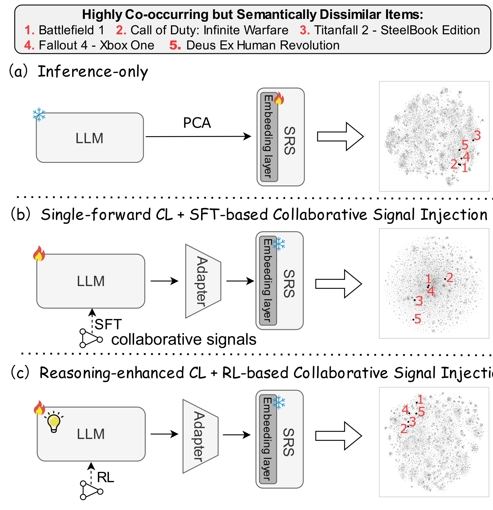
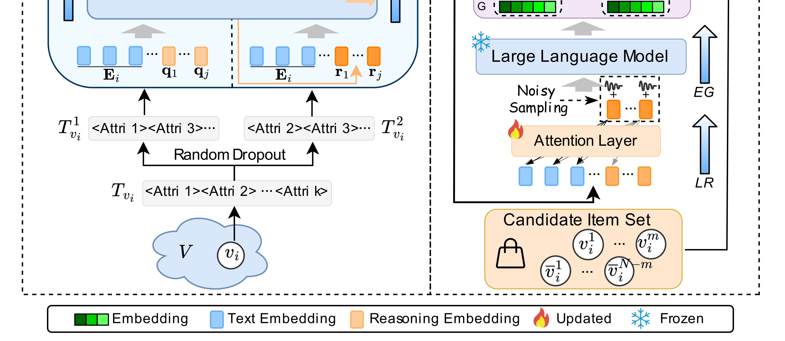
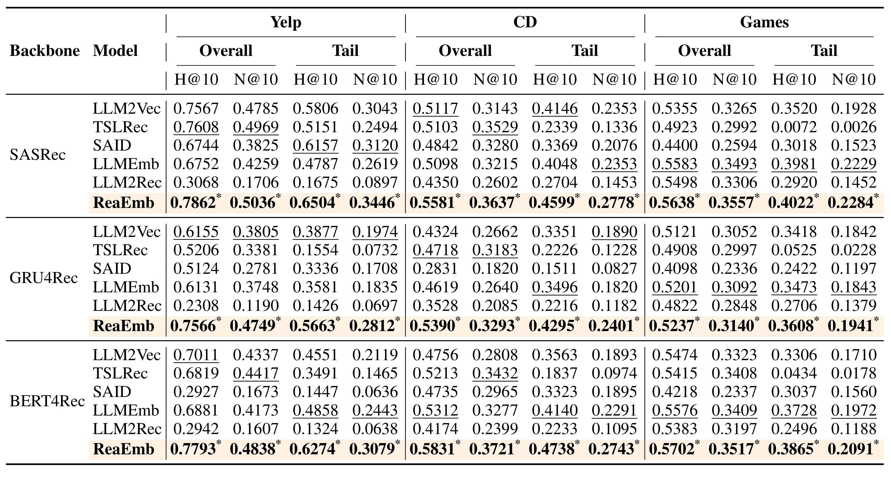
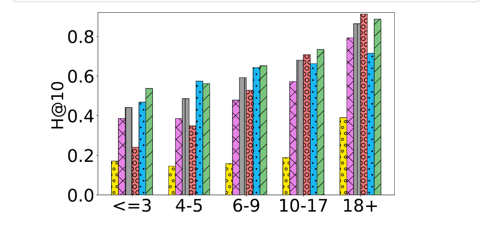

Harmonizing Semantic and Collaborative in LLMs: Reasoning-based Embedding Generator for Sequential Recommendation
Harmonizing Semantic and Collaborative in LLMs: Reasoning-based Embedding Generator for Sequential Recommendation 这篇论文的中文读法是“ReaEmb：用推理增强的 LLM 生成序列推荐 Embedding”。论文入口是 arXiv:2606.16703，公开日期按 arXiv 记录为 2026-06-15，类别为 cs.IR。作者包括 Qidong Liu, Mingyao Huang, Moranxin Wang, Wenxuan Yang, Haiping Zhu；本轮目录仍沿用自动化产物的“多校”前缀，机构字段没有逐个作者主页核验。代码/项目页状态：PDF 首页脚注给出 ReaEmb GitHub 仓库路径；本轮未独立打开仓库验证可用性，因此不把代码状态写成已核验开源。 本文在日报中归入“推荐算法”，入选原因是：面向序列推荐长尾物品，先用 latent reasoning-enhanced contrastive learning 生成 reasoning-enhanced embedding，再用 collaborative reward RL 显式对齐高共现物品。
最重要的背景/问题（摘要/引言译文）：序列推荐需要根据用户历史预测下一个交互物品，但长尾物品交互稀疏，传统 SRS 难以学习稳定的协同表示。LLM 能补充物品语义并生成 item embedding，但现有方法一方面没有充分利用 LLM 的内部推理能力，另一方面多用 SFT 隐式注入协同信号，缺少面向 embedding 对齐的显式协同奖励。ReaEmb 的核心是用 LRCL 生成 reasoning-enhanced embedding，再用 CRRL 的共现奖励显式拉近高共现物品。
1. 背景和问题
序列推荐的核心输入是用户历史交互。热门物品有足够协同信号，长尾物品却常常只有稀疏点击，ID-based embedding 很难学到稳定邻域。LLM 的语义理解可以补充 item 文本，但语义相似不等于协同相似。
已有 LLM embedding 方法常见两类：直接 inference-only 生成向量，或通过单次前向和 SFT 注入协同信号。论文认为二者都不够，前者没有激活模型内部推理，后者把协同信号隐含在监督数据里，缺少对 embedding 空间的显式奖励约束。
ReaEmb 的目标不是让 LLM 直接做推荐排序，而是把 LLM 变成 item embedding generator。这样做的好处是可以接入 SASRec、GRU4Rec、BERT4Rec 等已有 backbone，同时把语义表示和协同结构对齐。
这篇论文对 LLM4Rec 的提醒是：如果只把文本语义塞进推荐模型，长尾问题未必解决；推荐需要的是“语义解释能力”和“协同共现结构”同时进入表示空间。
这一背景也解释了为什么今天六篇论文会被放在一起看。它们都不是单纯换一个更大的模型，而是把过去藏在系统里的中间接口拿出来定义：DeepRubric 定义证据到 reward 的接口，TokenPilot 定义上下文到缓存的接口，KVEraser 定义文本删除到 KV 状态的接口，OneRank 定义任务目标到 Transformer channel 的接口，ReaEmb 定义语义推理到协同 embedding 的接口，HoloRec 定义层次 semantic code 到生成式 reasoning 的接口。
对读者来说，判断这类论文是否有价值，不能只问“指标有没有涨”。更关键的问题是：作者是否明确了输入边界，是否把中间状态变成可观察对象，是否在实验里证明该状态不可替代，是否说明了成本和失败边界。下面的方法与实验解读都按这四个问题展开。
更具体地说，ReaEmb 讨论的不是一个孤立模型，而是一条从输入、状态、训练信号到系统约束的链路。输入侧是item 属性文本、候选集合、随机 dropout 视图、共现关系和 SRS backbone；状态侧是LLM 生成的 reasoning-enhanced embedding 以及协同 reward 调整后的表示空间；信号侧是InfoNCE 对比约束、collaborative reward、overall/tail H@10 与 N@10；部署侧则对应长尾序列推荐、离线 item embedding 生产和 LLM4Rec 表示增强。这四层如果任一层缺失，论文结论就会从机制解释退化为经验结果。
旧版笔记的问题在于直接搬入英文摘要残句，使读者难以判断作者到底在解决哪个中文问题。修复版把摘要和引言翻成中文后，核心矛盾更清楚：共现 reward 可能放大噪声关系，embedding 生产成本也会影响大规模上线。这句话也是后续所有图表选择和实验解释的边界。
从研究趋势看，ReaEmb 属于“把隐式中间状态显式化”的工作。它的意义不在于发明一个漂亮名词，而在于让语义推理与协同奖励对齐的 item embedding generator可以被拆分、记录、替换和消融。对推荐系统或 Agent 系统来说，可消融的中间状态往往比最终分数更能指导工程改造。
因此读这篇论文时，我不会先问它是否可以马上上线，而会先问三件事：论文有没有说明状态从哪里来；有没有说明状态如何影响输出；有没有用Yelp/CD/Games 三数据集、SASRec/GRU4Rec/BERT4Rec backbone、消融和流行度分组证明该状态不是冗余变量。只有这三点都成立，后续才值得讨论复现成本和业务迁移。
还需要注意的是，今天六篇论文都和近期自动化精读里的长记忆、生成式推荐、多任务排序方向相连。ReaEmb 的位置比较清晰：它把语义推理与协同奖励对齐的 item embedding generator推进到可验收接口层，而不是停留在抽象概念层。
从读者角度，ReaEmb 的背景章还要补一个判断标准：它是否把LLM item embedding 的语义-协同对齐的问题说成了可失败、可检查的形式。可失败意味着我们知道什么情况会让方法不成立；可检查意味着能用overall/tail H@10、N@10、backbone 对比、消融和 popularity group或对应分桶观察到变化。没有这两个标准，红字问题句再醒目也只是口号。
这也是为什么修复版不再把英文摘要整段贴进来。摘要原文当然重要，但精读笔记应该完成翻译和压缩：把作者说的任务对象、旧方法缺口、新方法承诺和验证口径转成中文。对 ReaEmb 来说，这四项分别落在LRCL、两次前向、attention-enhanced embedding、collaborative reward RL和overall/tail H@10、N@10、backbone 对比、消融和 popularity group上。
如果把这篇论文放到后续研究队列，我会先给它建立一个本地检查表：输入字段是否可获得，状态是否可日志化，训练信号是否能分解，成本是否可度量，失败样例是否和语义相似替代了协同相似，或者共现 reward 把噪声关系拉近有关。这个检查表比复述摘要更能指导下一步。
2. 方法
2.1 三种 LLM embedding 范式对比
Figure 1 把 inference-only、single-forward CL + SFT 和 ReaEmb 的 reasoning-enhanced CL + RL-based collaborative signal injection 放在一起。这个对比说明作者并不否认语义 embedding 的价值，而是认为现有范式缺少显式推理和协同奖励。
这一模块要先回答“信息从哪里来”。在 ReaEmb 中，输入不是一个抽象变量，而是和论文场景强绑定的对象：可能是 evidence tree、context segment、erased span、task token、item attribute 或 semantic code。只有把输入边界写清楚，后面的训练目标和实验表才有意义。

Figure 1 是原论文中的真实图对象，本次裁剪只截取图内结构，避免把 caption 或普通段落误当作图片。它在这里的作用是把 ReaEmb 的核心论证落到可视化结构上：读者可以直接看到模块、箭头、状态或曲线如何对应正文正在讨论的机制。和旧版页带截图不同，这张图不再承担装饰作用，而是作为后续方法解释或实验判断的锚点。这张图尤其适合用来检查论文的问题定义是否成立：它展示了旧范式和新范式在信息流上的差别，帮助判断作者是否真的解决了 面向序列推荐长尾物品，先用 latent reasoning-enhanced contrastive learning 生成 reasoning-enhanced embedding，再用 collaborative reward RL 显式对齐高共现物品。 这一矛盾。
围绕“三种 LLM embedding 范式对比”读 语义推理与协同奖励对齐的 item embedding generator 时，我会先检查输入字段是否闭合。这里的关键输入包括item 属性文本、候选集合、随机 dropout 视图、共现关系和 SRS backbone；如果复现代码没有把这些字段分开记录，而是提前拼成一段不可追踪文本或一个混合向量，后续即使得到相近指标，也无法确认收益来自论文声称的机制。
在“三种 LLM embedding 范式对比”这一小节里，第二层要看状态更新。LLM 生成的 reasoning-enhanced embedding 以及协同 reward 调整后的表示空间不是论文插图里的装饰概念，而是训练和推理之间共享的中间对象。实现时应给它留下日志、版本号和消融开关，至少能回答三件事：它在什么时候产生，和哪些样本绑定，被删除或替换后哪些指标会变化。
第三层是训练信号。InfoNCE 对比约束、collaborative reward、overall/tail H@10 与 N@10应当能回到“三种 LLM embedding 范式对比”这一模块，而不是只在最终输出上结算。若只有总体 loss 或平均分，模型可能学到数据集捷径；若能拆到模块输入、状态和输出，就能判断该模块是必要结构还是只提供了额外容量。
最后要把推理路径和部署约束一起看。长尾序列推荐、离线 item embedding 生产和 LLM4Rec 表示增强场景通常有延迟、内存、缓存命中、样本刷新或线上策略约束；三种 LLM embedding 范式对比 如果只在离线脚本里存在，却无法映射到服务时状态，就只能算研究原型，不能直接进入工程设计。
如果要把这一模块接到现有系统，我会先做最小闭环：保留原 baseline，只替换与“三种 LLM embedding 范式对比”直接相关的状态；再加分桶和成本指标。这样能区分结构收益、数据收益和训练预算收益，避免把多个变量混在一次实验里。
在实现层面，“三种 LLM embedding 范式对比”还需要一套负例思维。也就是说，不只证明它在正向流程中存在，还要能构造一个去掉该状态、替换该输入、打乱该顺序或冻结该参数的对照。若对照后overall/tail H@10、N@10、backbone 对比、消融和 popularity group几乎不变，说明这个模块可能只是叙事包装；若变化集中在论文预期的分桶或成本项上，机制解释才更可信。
围绕“三种 LLM embedding 范式对比”，我还会检查它和其他模块之间的接口张力。LRCL、两次前向、attention-enhanced embedding、collaborative reward RL之间不是线性堆叠关系，而是互相约束：前一个模块给出候选状态，当前模块决定状态如何被压缩或对齐，后一个模块把状态变化转成评价信号。复现时如果省略其中任意一端，剩下的公式或图示都会失去上下文。
修复补充：1.jpg 在本轮被重新定义为单个 PDF 图表对象，而不是页面截图。对 ReaEmb 来说，这张图/表的验收重点有三项：第一，读者能直接看到原论文的结构、坐标轴、表头或指标名；第二，它插入的位置和正文正在讨论的问题、方法或实验一致；第三，它不把作者信息、摘要、caption 或普通段落混入图片主体。后续如果继续精修，应优先复核这张图/表对应的 PDF caption 和正文段落，而不是只看图片是否清晰。
2.2 Latent Reasoning-enhanced Contrastive Learning
LRCL 通过两次前向和注意力增强，让 LLM 在 item 属性、候选集合和随机 dropout 的扰动下形成更稳健的表示。它试图让 embedding 不是单纯摘要属性文本，而是包含模型对物品关系的隐式推理。
第二个要点是中间状态如何更新。ReaEmb 的设计并不是把所有信息拼接后交给一个黑箱，而是明确给出状态转移或表示对齐方式。这个位置最容易出现实现偏差：如果复现者省略状态记录，只保留最终 loss，就无法解释论文声称的机制。
本文的方法链中有一个值得保留的符号化读法：
符号解释：z_i 表示 item i 的 LLM embedding，z_i^+ 是同一物品或增强视图的正样本，τ 是温度系数。这个对比式读法帮助理解 LRCL 如何约束表示空间；CRRL 再用协同 reward 调整语义与共现之间的距离。

Figure 2 是原论文中的真实图对象，本次裁剪只截取图内结构，避免把 caption 或普通段落误当作图片。它在这里的作用是把 ReaEmb 的核心论证落到可视化结构上：读者可以直接看到模块、箭头、状态或曲线如何对应正文正在讨论的机制。和旧版页带截图不同，这张图不再承担装饰作用，而是作为后续方法解释或实验判断的锚点。放在方法章，是因为它对应具体模块的输入、输出和中间状态。复现时应把图中的每条箭头翻译成日志字段、训练样本字段或 serving 阶段的状态更新。
围绕“Latent Reasoning-enhanced Contrastive Learning”读 语义推理与协同奖励对齐的 item embedding generator 时，我会先检查输入字段是否闭合。这里的关键输入包括item 属性文本、候选集合、随机 dropout 视图、共现关系和 SRS backbone；如果复现代码没有把这些字段分开记录，而是提前拼成一段不可追踪文本或一个混合向量，后续即使得到相近指标，也无法确认收益来自论文声称的机制。
在“Latent Reasoning-enhanced Contrastive Learning”这一小节里，第二层要看状态更新。LLM 生成的 reasoning-enhanced embedding 以及协同 reward 调整后的表示空间不是论文插图里的装饰概念，而是训练和推理之间共享的中间对象。实现时应给它留下日志、版本号和消融开关，至少能回答三件事：它在什么时候产生，和哪些样本绑定，被删除或替换后哪些指标会变化。
第三层是训练信号。InfoNCE 对比约束、collaborative reward、overall/tail H@10 与 N@10应当能回到“Latent Reasoning-enhanced Contrastive Learning”这一模块，而不是只在最终输出上结算。若只有总体 loss 或平均分，模型可能学到数据集捷径；若能拆到模块输入、状态和输出，就能判断该模块是必要结构还是只提供了额外容量。
最后要把推理路径和部署约束一起看。长尾序列推荐、离线 item embedding 生产和 LLM4Rec 表示增强场景通常有延迟、内存、缓存命中、样本刷新或线上策略约束；Latent Reasoning-enhanced Contrastive Learning 如果只在离线脚本里存在，却无法映射到服务时状态，就只能算研究原型，不能直接进入工程设计。
把这个模块放到全文结构里看，它承担的是连接问题定义和实验指标的桥。前一节解释为什么需要语义推理与协同奖励对齐的 item embedding generator，这一节说明如何形成可学习状态，后一节才用Yelp/CD/Games 三数据集、SASRec/GRU4Rec/BERT4Rec backbone、消融和流行度分组来验证。少掉这一步，论文就会退回“描述一个现象，然后展示一张结果表”的弱结构。
在实现层面，“Latent Reasoning-enhanced Contrastive Learning”还需要一套负例思维。也就是说，不只证明它在正向流程中存在，还要能构造一个去掉该状态、替换该输入、打乱该顺序或冻结该参数的对照。若对照后overall/tail H@10、N@10、backbone 对比、消融和 popularity group几乎不变，说明这个模块可能只是叙事包装；若变化集中在论文预期的分桶或成本项上，机制解释才更可信。
围绕“Latent Reasoning-enhanced Contrastive Learning”，我还会检查它和其他模块之间的接口张力。LRCL、两次前向、attention-enhanced embedding、collaborative reward RL之间不是线性堆叠关系，而是互相约束：前一个模块给出候选状态，当前模块决定状态如何被压缩或对齐，后一个模块把状态变化转成评价信号。复现时如果省略其中任意一端，剩下的公式或图示都会失去上下文。
修复补充：2.jpg 在本轮被重新定义为单个 PDF 图表对象，而不是页面截图。对 ReaEmb 来说，这张图/表的验收重点有三项：第一，读者能直接看到原论文的结构、坐标轴、表头或指标名；第二，它插入的位置和正文正在讨论的问题、方法或实验一致；第三，它不把作者信息、摘要、caption 或普通段落混入图片主体。后续如果继续精修，应优先复核这张图/表对应的 PDF caption 和正文段落，而不是只看图片是否清晰。
2.3 Collaborative Reward Reinforcement Learning
CRRL 使用共现关系构造 reward，鼓励高共现但语义可能不相似的物品在 embedding 空间中靠近。这个阶段是论文最贴近推荐本质的部分，因为它把协同过滤信号从 SFT 的隐式监督改为显式优化目标。
第三个要点是训练信号如何回到该模块。无论是 reward、contrastive loss、多任务损失还是 reconstruction objective，都必须能指向具体状态。若信号只在最终输出上结算，模型可能学到捷径，而不是作者希望的接口行为。
围绕“Collaborative Reward Reinforcement Learning”读 语义推理与协同奖励对齐的 item embedding generator 时，我会先检查输入字段是否闭合。这里的关键输入包括item 属性文本、候选集合、随机 dropout 视图、共现关系和 SRS backbone；如果复现代码没有把这些字段分开记录，而是提前拼成一段不可追踪文本或一个混合向量，后续即使得到相近指标，也无法确认收益来自论文声称的机制。
在“Collaborative Reward Reinforcement Learning”这一小节里，第二层要看状态更新。LLM 生成的 reasoning-enhanced embedding 以及协同 reward 调整后的表示空间不是论文插图里的装饰概念，而是训练和推理之间共享的中间对象。实现时应给它留下日志、版本号和消融开关，至少能回答三件事：它在什么时候产生，和哪些样本绑定，被删除或替换后哪些指标会变化。
第三层是训练信号。InfoNCE 对比约束、collaborative reward、overall/tail H@10 与 N@10应当能回到“Collaborative Reward Reinforcement Learning”这一模块，而不是只在最终输出上结算。若只有总体 loss 或平均分，模型可能学到数据集捷径；若能拆到模块输入、状态和输出，就能判断该模块是必要结构还是只提供了额外容量。
最后要把推理路径和部署约束一起看。长尾序列推荐、离线 item embedding 生产和 LLM4Rec 表示增强场景通常有延迟、内存、缓存命中、样本刷新或线上策略约束；Collaborative Reward Reinforcement Learning 如果只在离线脚本里存在，却无法映射到服务时状态，就只能算研究原型，不能直接进入工程设计。
另一个容易忽略的点是失败样例。共现 reward 可能放大噪声关系，embedding 生产成本也会影响大规模上线，所以复现时不要只采集成功轨迹或平均指标；要保留模块输入错误、状态漂移、奖励误判和极端样本，才能知道论文机制在什么条件下会失效。
在实现层面，“Collaborative Reward Reinforcement Learning”还需要一套负例思维。也就是说，不只证明它在正向流程中存在，还要能构造一个去掉该状态、替换该输入、打乱该顺序或冻结该参数的对照。若对照后overall/tail H@10、N@10、backbone 对比、消融和 popularity group几乎不变，说明这个模块可能只是叙事包装；若变化集中在论文预期的分桶或成本项上，机制解释才更可信。
围绕“Collaborative Reward Reinforcement Learning”，我还会检查它和其他模块之间的接口张力。LRCL、两次前向、attention-enhanced embedding、collaborative reward RL之间不是线性堆叠关系，而是互相约束：前一个模块给出候选状态，当前模块决定状态如何被压缩或对齐，后一个模块把状态变化转成评价信号。复现时如果省略其中任意一端，剩下的公式或图示都会失去上下文。
2.4 与 SRS backbone 的接口
ReaEmb 生成的 item embedding 可接入 SASRec、GRU4Rec、BERT4Rec 等序列推荐模型。论文因此把贡献放在 embedding generator，而不是替换整个推荐链路，这更符合工程迁移方式。
最后一个模块通常承担泛化、效率或部署约束。ReaEmb 在这里要证明方法不是只在一个静态设置里有效，而是能在不同样本、不同任务长度或不同目标之间保持相对稳定。
围绕“与 SRS backbone 的接口”读 语义推理与协同奖励对齐的 item embedding generator 时，我会先检查输入字段是否闭合。这里的关键输入包括item 属性文本、候选集合、随机 dropout 视图、共现关系和 SRS backbone；如果复现代码没有把这些字段分开记录，而是提前拼成一段不可追踪文本或一个混合向量，后续即使得到相近指标，也无法确认收益来自论文声称的机制。
在“与 SRS backbone 的接口”这一小节里，第二层要看状态更新。LLM 生成的 reasoning-enhanced embedding 以及协同 reward 调整后的表示空间不是论文插图里的装饰概念，而是训练和推理之间共享的中间对象。实现时应给它留下日志、版本号和消融开关，至少能回答三件事：它在什么时候产生，和哪些样本绑定，被删除或替换后哪些指标会变化。
第三层是训练信号。InfoNCE 对比约束、collaborative reward、overall/tail H@10 与 N@10应当能回到“与 SRS backbone 的接口”这一模块，而不是只在最终输出上结算。若只有总体 loss 或平均分，模型可能学到数据集捷径；若能拆到模块输入、状态和输出，就能判断该模块是必要结构还是只提供了额外容量。
最后要把推理路径和部署约束一起看。长尾序列推荐、离线 item embedding 生产和 LLM4Rec 表示增强场景通常有延迟、内存、缓存命中、样本刷新或线上策略约束；与 SRS backbone 的接口 如果只在离线脚本里存在，却无法映射到服务时状态，就只能算研究原型，不能直接进入工程设计。
如果要把这一模块接到现有系统，我会先做最小闭环：保留原 baseline，只替换与“与 SRS backbone 的接口”直接相关的状态；再加分桶和成本指标。这样能区分结构收益、数据收益和训练预算收益，避免把多个变量混在一次实验里。
在实现层面，“与 SRS backbone 的接口”还需要一套负例思维。也就是说，不只证明它在正向流程中存在，还要能构造一个去掉该状态、替换该输入、打乱该顺序或冻结该参数的对照。若对照后overall/tail H@10、N@10、backbone 对比、消融和 popularity group几乎不变，说明这个模块可能只是叙事包装；若变化集中在论文预期的分桶或成本项上，机制解释才更可信。
围绕“与 SRS backbone 的接口”，我还会检查它和其他模块之间的接口张力。LRCL、两次前向、attention-enhanced embedding、collaborative reward RL之间不是线性堆叠关系，而是互相约束：前一个模块给出候选状态，当前模块决定状态如何被压缩或对齐，后一个模块把状态变化转成评价信号。复现时如果省略其中任意一端，剩下的公式或图示都会失去上下文。 方法章最后还需要把复现顺序讲清楚。对 ReaEmb，我会先复刻最小输入和原始 baseline，再只打开LRCL 和 collaborative reward相关状态，最后才调整训练预算或模型规模。这样做可以避免一个常见误判：把数据清洗、更长训练或更大模型带来的提升误记到论文机制上。每一次实验都应保留同一套overall/tail H@10 与 N@10，并记录对应状态是否真的发生了预期变化。
如果后续要把这篇论文改造成内部实验，第一版不应追求全量复现，而应做机制探针。机制探针只回答一个问题：当LRCL 和 collaborative reward被关闭、扰动或替换时，论文最关心的overall/tail H@10 与 N@10是否按预期变化。只有这个探针成立，才值得继续扩展到完整数据、更多 baseline 和线上灰度。
3. 实验结果
实验章只记录原论文报告结果的读法，本轮没有重跑代码，也没有把图表数字改写成二手 benchmark。对 ReaEmb，更可靠的阅读顺序是先看主结果是否回答摘要里的问题，再看消融是否支撑方法模块，最后看成本、分桶或案例是否暴露边界。
3.1 主结果怎么读
Table 2 同时报告 overall 与 tail performance，覆盖 Yelp、CD、Games 三个数据集，并在 SASRec、GRU4Rec、BERT4Rec backbone 下比较。这个设计直接服务论文动机：如果方法只提升整体热门物品而不改善 tail，就不能说明长尾问题被缓解。
论文报告 ReaEmb 在多个 backbone 和数据集上优于 LLM2Vec、TSLRec 等对照，尤其关注 H@10 与 N@10。读表时要看 tail 列与 overall 列是否同步改善，而不是只看平均最优。

Table 2 是原论文的表格证据，本次重新裁剪时只保留表格对象本身，去掉 caption、相邻正文和页眉页脚。读这张表时不要只看单个最佳数字，而要把列组、指标方向和对照行放在一起看。对 ReaEmb 来说，这张表直接服务于“Overall and long-tail performance comparison”这个证据点：它说明作者如何把方法主张落到可比较的 baseline、数据集或线上指标上。若后续复现，应优先核对表头指标、数据划分和每个 baseline 的设置是否与论文一致。放在实验章，是因为它给出原论文报告结果的主要证据。这里的数值应按论文口径理解，本轮没有重跑代码，因此不能把它改写成独立复现实验结论。
修复补充：3.jpg 在本轮被重新定义为单个 PDF 图表对象，而不是页面截图。对 ReaEmb 来说，这张图/表的验收重点有三项：第一，读者能直接看到原论文的结构、坐标轴、表头或指标名；第二，它插入的位置和正文正在讨论的问题、方法或实验一致；第三，它不把作者信息、摘要、caption 或普通段落混入图片主体。后续如果继续精修，应优先复核这张图/表对应的 PDF caption 和正文段落，而不是只看图片是否清晰。
3.2 消融、效率和分桶证据
Table 3 和 Figure 3 做消融与 reasoning step 分析，说明 LRCL、CRRL 和 reasoning 过程都在贡献结果。若去掉 collaborative reward 后长尾指标下降，就能支持“显式协同奖励必要”的论点。
Figure 4 和 Figure 5 从 popularity group 与不同 LLM 系列看鲁棒性。它们回答两个部署问题：方法是否只在热门组有效，以及换一个 LLM embedding base 后是否仍保持收益。

Figure 4 是原论文中的真实图对象，本次裁剪只截取图内结构，避免把 caption 或普通段落误当作图片。它在这里的作用是把 ReaEmb 的核心论证落到可视化结构上：读者可以直接看到模块、箭头、状态或曲线如何对应正文正在讨论的机制。和旧版页带截图不同，这张图不再承担装饰作用，而是作为后续方法解释或实验判断的锚点。它提供的是分布或案例层面的补充证据。读这类图应关注失败边界、样本覆盖和长尾/稀疏条件，而不是只看平均提升。
修复补充：4.jpg 在本轮被重新定义为单个 PDF 图表对象，而不是页面截图。对 ReaEmb 来说，这张图/表的验收重点有三项：第一，读者能直接看到原论文的结构、坐标轴、表头或指标名；第二，它插入的位置和正文正在讨论的问题、方法或实验一致；第三，它不把作者信息、摘要、caption 或普通段落混入图片主体。后续如果继续精修，应优先复核这张图/表对应的 PDF caption 和正文段落，而不是只看图片是否清晰。
3.3 可信度与复现边界
从可信度看，ReaEmb 至少给出了与方法主张相邻的实验证据，而不是只给一个最终平均分。但自动化精读需要保守：表格数字仍是原论文报告结果；数据预处理、baseline 超参、随机种子和线上流量策略都没有在本轮独立复验。若后续要把这篇论文用于实验立项，应先复核 PDF 中的数据集定义、评价脚本、训练预算和消融设置。
从工程迁移看，ReaEmb 的价值取决于中间接口能不能落到本地系统。若本地日志无法记录论文里的状态，若训练样本无法复现论文的输入字段，或者线上服务不允许论文假设的更新频率，那么这篇论文只能作为概念参考，而不能直接成为模型改造方案。
补充看实验时，ReaEmb 的主表、消融和效率证据要连成一条链。Yelp/CD/Games 三数据集、SASRec/GRU4Rec/BERT4Rec backbone、消融和流行度分组分别回答“是否有效”“为什么有效”和“代价多少”。如果只引用主结果，读者会误以为论文只是 benchmark 排名；如果同时读消融和成本，才能看到作者是否真正验证了语义推理与协同奖励对齐的 item embedding generator。
主结果需要和红字问题句对齐。比如作者若声称解决共现 reward 可能放大噪声关系，embedding 生产成本也会影响大规模上线，实验就不能只报告平均准确率，而应至少展示困难样本、长尾分组、上下文长度、任务阶段或线上指标中的一个切面。ReaEmb 的图表选择就是围绕这个原则保留：方法图解释机制，主结果表支撑效果，补充图展示分布或成本。
消融读法也要保守。去掉某个模块后指标下降，只能说明该模块在论文设置下有贡献；是否能迁移到本地系统，还要看数据、日志字段和服务约束是否相似。尤其是长尾序列推荐、离线 item embedding 生产和 LLM4Rec 表示增强，常常会遇到论文没有覆盖的刷新频率、资源上限和异常样本。
成本指标必须和效果同时读。ReaEmb 如果在InfoNCE 对比约束、collaborative reward、overall/tail H@10 与 N@10上提升，却显著增加在线延迟、训练预算或维护复杂度，那么落地价值会下降；反过来，如果成本下降但关键效果退化，也不能只用效率数字包装成成功。
本轮没有运行作者代码，所以所有表格数字都标为原论文报告结果。修复版笔记的目标是把原论文证据摆正，而不是制造复现实验。下一步真正值得做的是拿论文图表对应的配置，搭一个最小可复核实验，先验证方向再谈改模型。
再看实验证据，ReaEmb 的图表必须回答“机制是否带来可定位变化”。如果提升只出现在总体平均值，而没有在overall/tail H@10、N@10、backbone 对比、消融和 popularity group或相关分桶上体现，机制解释就需要降级。相反，如果主结果、消融和成本指标的方向一致，才说明论文不是只靠更强训练预算。
本地复现时还应把语义相似替代了协同相似，或者共现 reward 把噪声关系拉近列为首批回归样例。很多论文在平均指标上表现稳定，但一进入边界场景就暴露状态定义不完整、奖励口径错位或缓存/编码策略不稳。把这些样例提前列出来，可以避免上线后再用事故倒推问题。
因此，实验章的结论不是“论文证明了一切”，而是“论文给出了值得复核的证据路径”。这条路径从LRCL、两次前向、attention-enhanced embedding、collaborative reward RL出发，经过overall/tail H@10、N@10、backbone 对比、消融和 popularity group，最后落到LLM item embedding 的语义-协同对齐的可用性判断。
补充一条实验验收标准：我会把 ReaEmb 的结果拆成“效果是否存在、机制是否可解释、成本是否可接受”三层。第一层看overall/tail H@10 与 N@10，第二层看消融是否击中LRCL 和 collaborative reward，第三层看训练和推理成本是否仍在可部署范围内。三层只要有一层不成立，结论就应降级为待验证，而不是写成已可落地。
4. 总结
4.1 我的判断
我会把 ReaEmb 归为“接口显式化”论文。它最值得保留的不是某个单点指标，而是把“面向序列推荐长尾物品，先用 latent reasoning-enhanced contrastive learning 生成 reasoning-enhanced embedding，再用 collaborative reward RL 显式对齐高共现物品。”拆成可观察、可消融、可讨论成本的系统接口。这样的论文对推荐系统和 LLM Agent 都有现实意义，因为业务系统真正难调的往往不是最后一层模型，而是中间状态如何定义、如何更新、如何回滚。
4.2 局限
局限需要直接写清楚：共现 reward 依赖数据集构造，噪声共现可能拉近错误物品。；LLM embedding 生成成本在大规模 item 库上需要离线预算评估。；长尾指标提升仍需在线点击/转化验证。；PDF 脚注给出仓库路径，但本轮未验证代码可运行性。。这些限制不会否定论文价值，但会决定它适合做“直接复现”“专题阅读”还是“后续观察”。
4.3 后续跟进
后续建议有三条：打开仓库复核数据预处理和 CRRL reward 细节。；与 LLM2Rec、LLMEmb、semantic ID 方案做统一 benchmark。；关注大规模 item 库增量更新时 embedding 刷新成本。。如果明天或后续版本出现代码、补充实验或作者项目页更新，应优先更新代码状态、实验复核和主页笔记，而不是只在日报里补一句“已开源”。 再压缩成一句话，ReaEmb 的可取之处是把语义推理与协同奖励对齐的 item embedding generator从经验技巧变成接口问题。它给出的不是“把模型调大”这种粗粒度建议，而是告诉读者应当观察哪些输入、保存哪些状态、优化哪些信号，以及在哪些成本约束下判断成败。
我的保守判断是：这篇论文适合进入专题跟踪，但不适合跳过复现直接改线上系统。最小复现应围绕InfoNCE 对比约束、collaborative reward、overall/tail H@10 与 N@10建立，先确认指标与状态变化方向一致，再决定是否扩大到长尾序列推荐、离线 item embedding 生产和 LLM4Rec 表示增强场景。
如果后续作者公开代码或补充实验，最优先更新三件事：第一，代码是否真的实现了论文图中的状态接口；第二，默认数据处理是否和论文表格一致；第三，失败样例是否暴露共现 reward 可能放大噪声关系，embedding 生产成本也会影响大规模上线。这些信息比再追加一段泛泛工程启发更有价值。
最终我会把 ReaEmb 的跟踪优先级设为“可继续精读但需复核”。它给了清楚的问题接口和图表证据，但真正进入工程前，还要补齐代码、数据和边界样例。尤其是语义相似替代了协同相似，或者共现 reward 把噪声关系拉近，这是后续验证中最不能省略的部分。
这次修复版最大的变化不是字数增加，而是证据位置变清楚：红字对应摘要/引言，方法图跟着模块解释，实验图表跟着结果判断，英文术语只作为必要名词出现。后续流水线应把这种结构当成质量门槛。